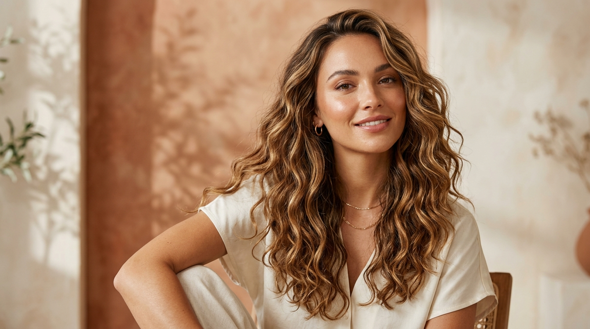
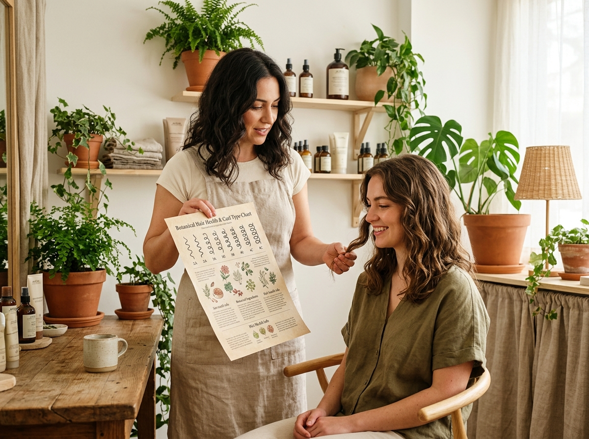

En (Ancestral Curly - Academia) combinamos un punto físico en Ciénaga, Magdalena con atención virtual para toda Colombia. Acompañamos tu transición capilar con diagnóstico personalizado, talleres prácticos y productos certificados libres de químicos agresivos, adaptados al clima cálido de nuestra región.

Durante años se ha normalizado la creencia de que "liso es estar arreglada", atrapando a miles de mujeres en procesos químicos costosos que dañan la fibra capilar y la salud. Nosotros ofrecemos la alternativa real y saludable.
Aplica el método de la Academia para descubrir cómo reacciona tu cutícula capilar y qué tipo de cuidado necesita tu melena en el clima caribeño.
Selecciona la opción que mejor describe tu hebra capilar:
Comportamiento de absorción capilar según nuestra dinámica pedagógica:
Queremos brindarte la orientación más acertada:
Tu cabello tiene un potencial extraordinario. Con la rutina adecuada y técnicas botánicas sin peso, tus ondas y rizos lucirán saludables, brillantes y resistentes a la humedad.
Técnica rizo a rizo con hidratación botánica profunda
Extractos de Romero, Linaza pura y Manteca de Murumuru
Asesoría personalizada (Presencial en Ciénaga o Virtual)
Aprende exactamente qué necesita tu hebra con sesiones 1 a 1. Diseñamos tu cronograma capilar, te acompañamos en tu transición y te enseñamos a dominar tus ondas, rizos o afros.

A diferencia de las tiendas que solo revenden frascos al paso o las peluquerías que imponen alisados, en (Ancestral Curly - Academia) te entregamos el conocimiento para que seas dueña de tu rutina.
Ideal para mujeres y jóvenes que desean evaluar su patrón, salir del alisado y armar su primer cronograma capilar.
Sesión interactiva en vivo con práctica de técnicas de definición, auditoría de productos y acompañamiento personalizado.
Diseñada para madres, padres y acudientes que desean aprender a cuidar las ondas y rizos de niñas y adolescentes.
Fórmulas botánicas artesanales y distribución de marcas certificadas aptas (libres de sulfatos agresivos, siliconas insolubles y petrolatos). Adaptadas a las necesidades del clima caribeño.
Principios ancestrales y botánicos para proteger la cutícula del cabello frente al sol, el viento y la humedad del Caribe colombiano.
Apretar las ondas y rizos desde las puntas hacia el cuero cabelludo mientras el cabello está empapado. Ayuda a que el agua y el producto formen grupos definidos ('curl clumps') sin apelmazar.
Las toallas convencionales de rizo generan fricción que abre la cutícula y multiplica el frizz. Usar fibras suaves de algodón o bambú absorbe el exceso de agua sin robar los nutrientes.
Los geles naturales de linaza o chía crean una capa protectora ('cast') que mantiene el rizo blindado de la humedad exterior. Al estar 100% seco, unas gotas de sérum ligero rompen la dureza dejando suavidad total.
Mujeres y familias del Magdalena y de todo el país que decidieron dejar atrás el alisado químico y reconectaron con su textura natural.
"Llevaba 6 años alisándome con queratina cada dos meses por miedo al frizz en Ciénaga. En la asesoría VIP aprendí a amar mis rizos 3B y a definirlos con productos limpios. ¡Siento que recuperé mi libertad!"
"Como mamá no sabía cómo peinar a mi hija de 9 años sin hacerla llorar. La asesoría familiar nos cambió la rutina por completo: ahora desenredamos con amor y sus rizos lucen preciosos en el colegio."
"Hice el diagnóstico virtual desde Bogotá. El cronograma capilar paso a paso me dio la claridad que necesitaba. Mis ondas 2C tienen ahora brillo, movimiento y cero pesadez."